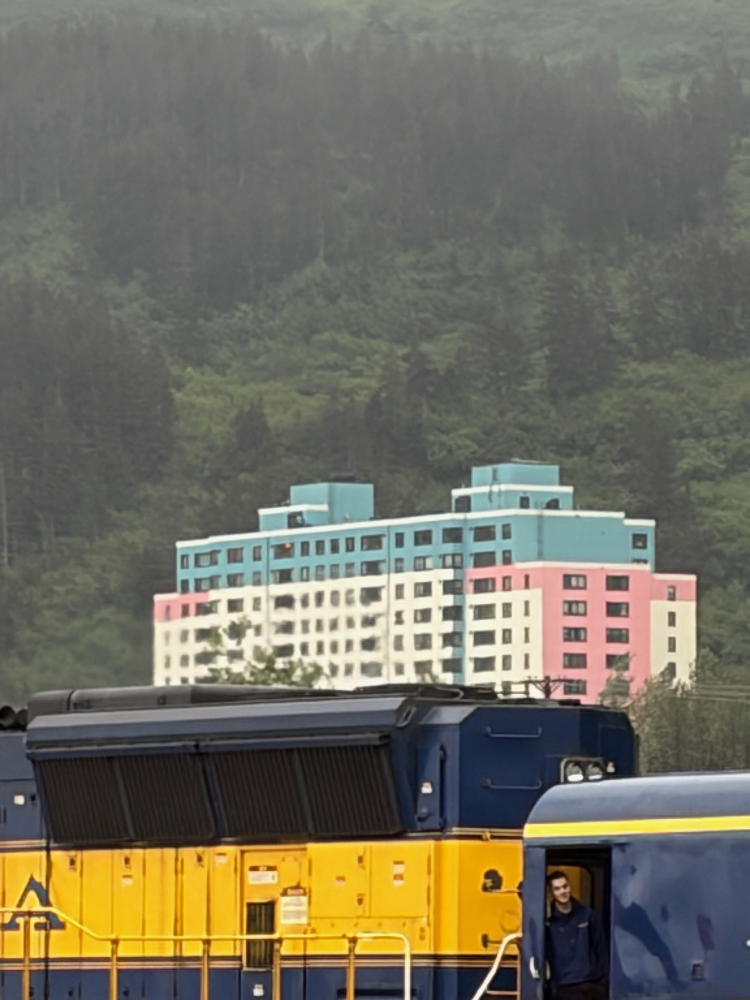
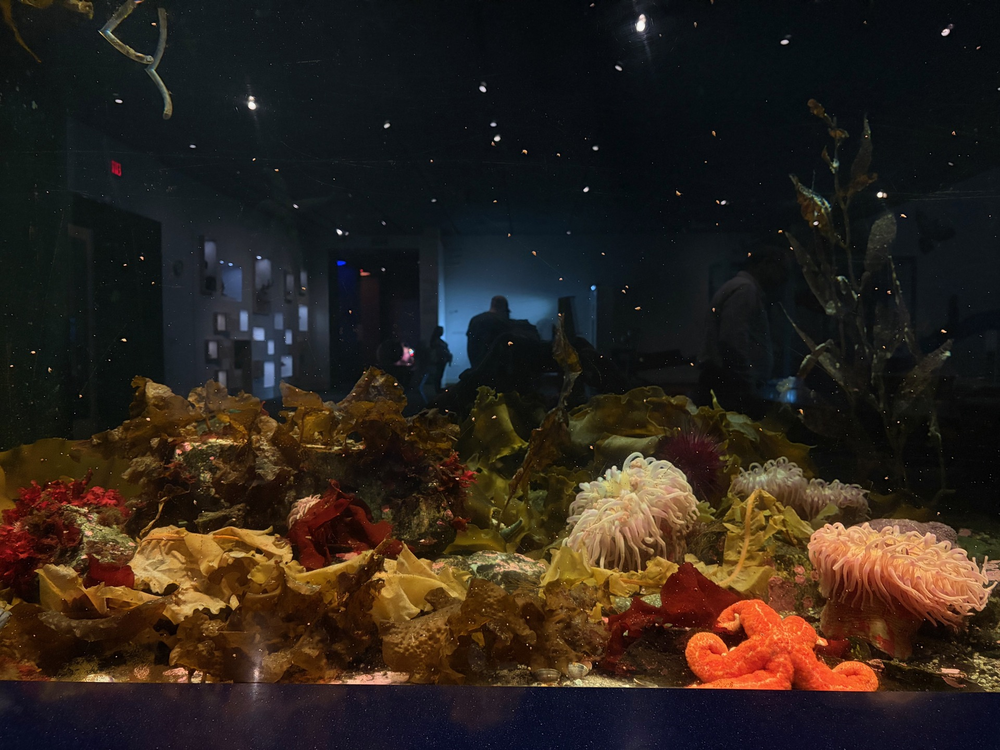

After the sea adventure came to its end, the Nieuw Amsterdam docked at Whittier — perhaps the strangest town in all of Alaska, and Alaska has some competition in that category. Whittier is a place that defies easy description: nearly the entire population lives in a single building. One tower of concrete houses the residents, the post office, the police, the shops, and more or less everything else a town requires. It sits at the end of a tunnel through a mountain, accessible only by that tunnel or by sea.
The Charmings had no complaints about leaving Whittier. They boarded a train bound for Anchorage, and the tunnel closed behind them.
Anchorage & the Museum

Anchorage is Alaska's largest city, which is a little like being the tallest hobbit — still not very tall by the standards of the outside world, but impressive in context. The Charmings visited the Museum of Alaska, which turned out to be quite good, filled with the natural and human history of this improbable state.
The aquarium was a highlight — cold-water creatures going about their business behind glass, indifferent to the tourists watching them. There was also a turtle of some renown named Snappy, though Snappy proved camera shy and left no photographic evidence of the encounter. The Charmings can confirm, however, that Snappy is very real and was in fine form.